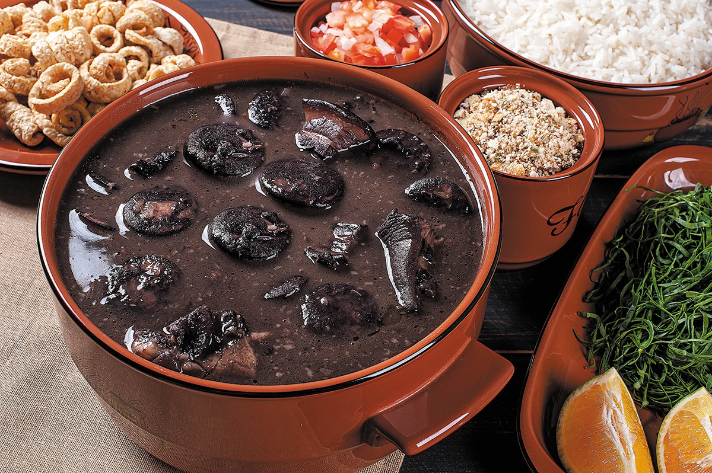
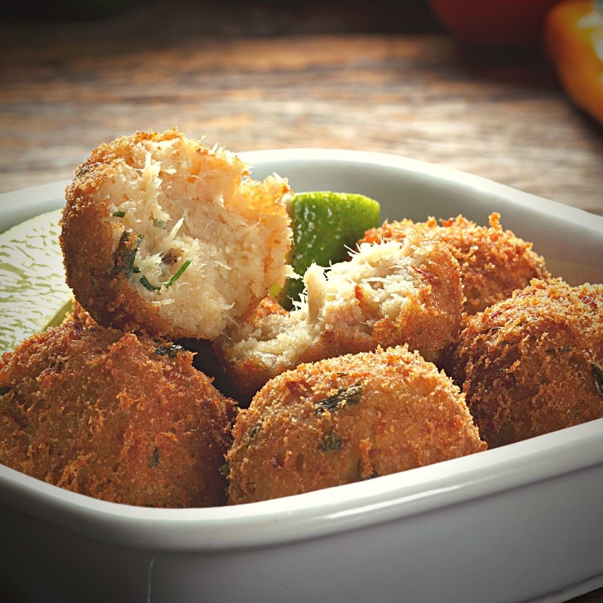
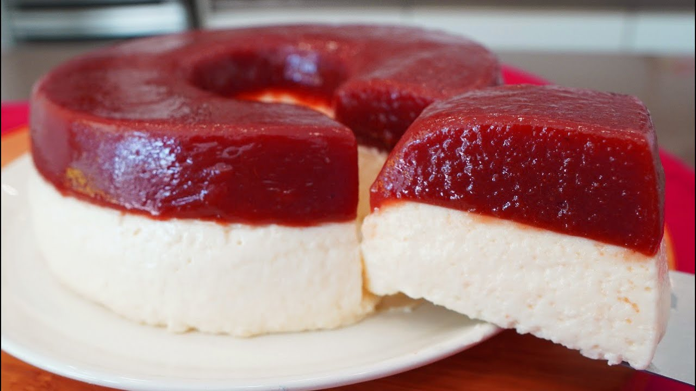

Tradicional prato brasileiro feito com feijão preto e carnes.
Especialidade mineira feita com polvilho e queijo.
Prato de milho recheado com vegetais e carnes.

Petisco crocante feito com bacalhau e batatas.

Clássica combinação de goiabada com queijo.
Clássico doce de leite condensado e chocolate.
Sobremesa de coco típica do Brasil.